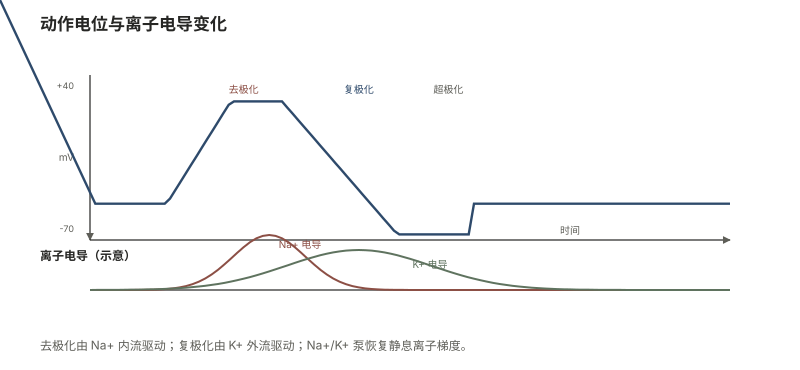
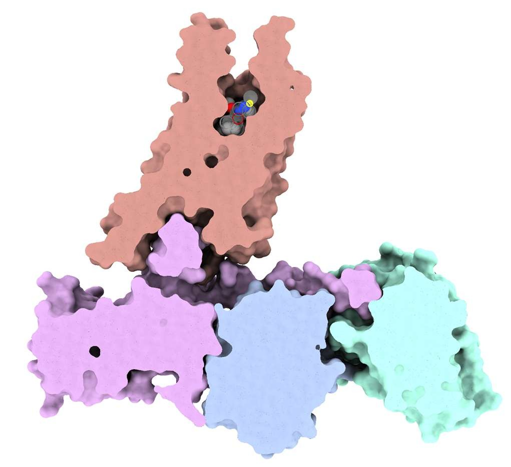

BIO105 · 第 8 章
神经系统的化学
Chemistry of Nervous Systems
虚线下划线为术语；悬停查看中文、英文与释义，完整词典见“术语”。
本章目录
本讲把“电”还原成化学：先用电化学势与 Nernst 方程解释静息电位，再用 Goldman 方程与等效电路解释动作电位，最后落到突触囊泡的释放机制与 orexin 对睡眠觉醒的调控。
本章要点
- 神经元按突起数目分为单极、双极与多极；树突是输入、轴突是输出。
- 静息电位来自电荷分离：脂双层阻挡离子扩散，Na⁺/K⁺ ATPase 逆梯度搬运离子，使胞内约为 −50 至 −70 mV。
- Nernst 方程给出单一离子的平衡电位：EX = (58/z) log([X]o/[X]i) mV。
- Goldman 方程用通透性比值（PK : PNa : PCl = 1.0 : 0.04 : 0.45）算出 −75 mV。
- 动作电位峰值时 gNa 增大约 500 倍，膜电位被拉向 ENa（+48 mV）。
- TTX 阻断 Na⁺ 通道、TEA 阻断 K⁺ 通道，是 Hodgkin–Huxley 模型的关键药理学证据。
- 突触囊泡由 V 型 ATP 酶酸化，经 SNARE 与 synaptotagmin 完成 Ca²⁺ 依赖的融合与释放。
- Orexin 神经元丢失导致发作性睡病；OX1 受体是 Gq 偶联 GPCR，走钙信号。
8.1 神经元的形态与信号方向
讲义从形态分类开始：神经元按突起（processes）的数目分为单极unipolar、双极bipolar与多极multipolar三类。这一分类看似只是解剖学，实际上决定了信号如何汇聚与传出。
功能上的方向是固定的：树突dendrite是输入端，接收来自其他神经元的突触信号；轴突axon是输出端，把整合后的信号传向远端。多极神经元（如脊髓运动神经元）有一个轴突与许多树突，可以整合成千上万个输入；双极神经元（如视网膜中的部分细胞）只有一个树突与一个轴突，线路更“点对点”。
这种“树突输入、轴突输出”的极性，是神经系统信息流向的基础。它意味着信号在一个神经元内是单向的：从树突到胞体，从胞体到轴突，从轴突到突触末梢。整个神经系统的复杂性，建立在无数个这样的单向单元之上。
L9 p.4
8.2 静息膜电位的来源与记录
所有神经电信号都建立在一个基础事实上：细胞膜两侧存在电荷分离。讲义给出的解释很直接——脂双层是离子扩散的屏障，因此正负电荷无法自由中和，分离得以维持。这种电荷分离产生膜电位membrane potential，定义为：
即膜内电位减去膜外电位。按此定义，大多数动物细胞的静息膜电位为负值（胞内比胞外负）。
如何测量？讲义用示波器描述了一个经典实验：当两个电极都在细胞外时，记录不到电位差；一旦把一根微电极插入细胞内，示波器立即显示一个稳定的电压——这就是静息膜电位（resting membrane potential）。这个“插入即出现”的现象本身就证明了电位差存在于膜两侧，而不是存在于溶液中。
维持这个电位的主力是Na⁺/K⁺ ATPase。讲义强调它的三个特征：
- 它同时把 Na⁺ 与 K⁺ 逆着各自的梯度搬运；
- 这一过程造成跨膜的电荷差，使胞内带负电，典型值为 −50 至 −70 mV；
- 它极其耗能——约消耗人体总能量的 25%。
为什么一个电学现象要消耗如此多的能量？因为电荷分离不是平衡态。离子持续通过漏通道顺梯度泄漏，泵必须持续把它们搬回去，才能维持梯度。这种“泄漏—泵回”的循环称为动态稳态：膜电位看起来静止，实际上是持续耗能的非平衡状态。
从能量角度，这类搬运属于电致运输electrogenic transport：离子在没有反离子伴随的情况下移动，导致正负电荷分离，产生电势。其自由能代价为：
其中 F = 96,480 J/V·mol，Δψ = ψ2 − ψ1（分别为膜外与膜内电位），C2 与 C1 分别为膜外与膜内的化学浓度。这个式子把“化学梯度”与“电学梯度”合并成一个量——电化学势，是理解所有离子跨膜行为的统一工具。
L9 p.5–9
8.3 Nernst 方程：单一离子的平衡电位
如果一个膜只对一种离子通透，膜电位会稳定在该离子的平衡电位上——此时化学梯度与电学梯度恰好抵消，净通量为零。这个电位可由电化学势推出：令 ΔGt = 0，得
这就是 Nernst 方程Nernst equation。讲义给出两种写法。第一种用自然对数，其中 R 是气体常数、T 是温度（K）、z 是离子价数、F 是法拉第常数，[X]o 与 [X]i 分别为膜外与膜内浓度：
第二种用常用对数。因为 25 °C 时 RT/F ≈ 25 mV，且 ln 10 ≈ 2.3，两者相乘约 58 mV，于是
讲义用它算钾的平衡电位：设 [K⁺]o = 20 mM、[K⁺]i = 400 mM，z = +1，则
负号来自浓度比小于 1：胞内钾远高于胞外，因此要把钾“留住”需要胞内为负电位。这个 −75 mV 与 8.2 节测得的静息电位非常接近，说明静息膜电位主要由 K⁺ 的通透性决定。
讲义的电路类比很直观：浓度梯度相当于一个电池，其电动势等于 EK；这个电池与一个电导 γK（代表 K⁺ 通道）串联。当膜电位不等于 EK 时，就有净电流通过；当两者相等时，电流为零。这一模型把抽象的“电化学势”变成了可计算的电路。
L9 p.10–13
8.4 Goldman 方程与等效电路
真实神经元对 K⁺、Na⁺、Cl⁻ 同时通透。Goldman 方程Goldman equation用各离子的通透性（permeability, P，单位 cm/s，量纲类似扩散系数）加权，给出综合膜电位：
注意氯离子在分子与分母中的位置相反（分子用 [Cl⁻]i、分母用 [Cl⁻]o），因为氯是阴离子，其电化学梯度的方向与其他两种阳离子相反。这个细节是公式中最容易写错的地方。
讲义给出拟合静息膜电位的通透性比值：
钾的通透性被定为 1，钠只有 0.04——钠的通透性仅为钾的二十五分之一。这就是为什么静息电位接近 EK 而不是 ENa：膜对钾“更开放”。
Nernst 与 Goldman 方程有一个共同的局限：它们无法描述膜电位随时间与距离的变化。当局部通透性突然改变（例如通道开放），膜电位如何随时间演化？这需要等效电路equivalent circuit模型。讲义把它定义为用导体（电阻）、电池与电容器表示神经元全部电学性质的电路：
- 电池：各离子的平衡电位 EK、ENa、ECl；
- 导体：各离子的电导 gK、gNa、gCl；
- 电容器：脂双层本身，膜电容 Cm。
对每种离子，欧姆定律给出电流：
静息时膜电位恒定，三种电流之和为零：INa + IK + ICl = 0。代入并解出 Vm：
这是一个加权平均：每种离子的平衡电位按其电导加权。代入讲义的数值，得到 Vm = −70 mV。当某个电导突然增大时，膜电位就会被拉向那个离子的平衡电位——这就是动作电位的全部秘密。
L9 p.14–17
8.5 动作电位：钠与钾的顺序激活
用等效电路可以精确算出动作电位峰值。讲义给出的关键数据是：在峰值时，gK 与 gCl 基本不变，而 gNa 增大约 500 倍——从 0.5 × 10−6 S 升到 250 × 10−6 S。这一增加由电压门控 Na⁺ 通道的开放造成。把新的 gNa 代入加权平均式，得到 Vm = +48 mV。
为什么峰值接近 ENa 而不接近 EK？因为此时 gNa 是 gK 的 25 倍、gCl 的 62.5 倍，钠电池在加权平均中占绝对优势。这个比例关系是本节的定量核心：膜电位由当时最大的电导决定。
整个过程是电压门控 Na⁺ 与 K⁺ 通道的顺序激活。讲义给出典型数值：静息 −75 mV，峰值 +55 mV。时间顺序是：
- 去极化达到阈值，电压门控 Na⁺ 通道开放，Na⁺ 内流；
- 内流进一步去极化，打开更多 Na⁺ 通道（正反馈），膜电位迅速上升到峰值；
- Na⁺ 通道失活，同时电压门控 K⁺ 通道开放，K⁺ 外流；
- 膜电位复极，回到静息水平。
Hodgkin 与 Huxley 把这个过程写成一组方程，其中包含三种电流与一个电容电流：
其中 Il 是漏电流（leak），Ic 是电容电流，Cm 是膜电容。电容电流的存在意味着：要改变膜电位，必须先给膜电容充放电——这就是动作电位有“时间过程”的原因，也是 Nernst/Goldman 方程无法描述动态的原因。
药理学证据来自两种毒素：TTX（河豚毒素，tetrodotoxin）阻断 Na⁺ 通道，TEA（四乙基铵，tetraethylammonium）阻断 K⁺ 通道。用 TTX 可以分离出 K⁺ 电流，用 TEA 可以分离出 Na⁺ 电流——正是这种“逐个关闭”的实验策略，让 Hodgkin 与 Huxley 拆解出两种通道的独立贡献。三人因此获得 1963 年诺贝尔生理学或医学奖。


绘图提示词
Clean vector physiology figure with three aligned traces sharing a time axis: top trace shows membrane potential rising from a resting minus 75 mV to a peak of plus 55 mV and returning, middle trace shows sodium conductance spiking sharply and briefly, bottom trace shows potassium conductance rising more slowly and staying elevated longer. A dashed line marks ENa and EK on the potential axis. Flat 2D line art, thin 1.5 px strokes, muted slate blue and warm grey palette, white background, English labels, no cartoon, no gradient, no shadow.
L9 p.17–21
8.6 电压门控通道如何感受电压
讲义在这一节回答一个结构问题：通道蛋白如何“知道”膜电位变了？答案是电压感受器。比较电压门控通道与晶体管，讲义指出一个关键差别：离子通道对跨膜电压极其敏感，而电子器件对施加电压的敏感度低得多。这一差别来自演化：通道需要在几毫伏的变化内从关闭切换到开放。
MacKinnon 及其同事通过结构研究发现，细菌钾通道的电压感受器是带电荷的“桨叶”（charged paddles），它们在膜的疏水内部移动。讲义用开/关两种构象的 X 射线结构展示：跨膜段上分布着带正电的残基（图中标为 +++），当膜内为负、膜外为正时，这些正电荷被推向膜外侧，带动螺旋移动，最终打开孔道；去极化时方向相反，通道关闭。
这个机制可以用一句话概括：电压门控 = 带电残基在电场中移动 = 构象改变 = 孔道开闭。它把“电学信号”直接翻译成“机械运动”，不需要任何化学中间物——这也是为什么通道的开关能快到微秒级。
L9 p.22–23
8.7 突触传递：囊泡循环与 SNARE
电信号到达轴突末梢后，必须转成化学信号才能跨越突触间隙。讲义先给出解剖框架：中枢神经系统分为大脑（cerebrum）、间脑（diencephalon）、脑干（brain stem）与小脑（cerebellum）；按发育来源又分为前脑、中脑与后脑。单胺类递质的投射（monoamine neurotransmitter projections）包括 NE（美国用法；英国写作 NA，即去甲肾上腺素）与 5-HT（血清素），它们的胞体集中在少数核团，轴突却投射到全脑——这种“少数源头、广泛投射”的结构决定了觉醒、情绪等全局状态。
化学突触的核心是突触囊泡synaptic vesicle。讲义给出一个循环：囊泡通过胞吐（exocytosis）释放递质，再通过内吞（endocytosis）被回收，形成再循环囊泡（recycling synaptic vesicle）。这个循环保证末梢在持续放电时仍能维持递质供应。
囊泡必须先把内部酸化，才能装载递质。执行这一步的是 V 型 ATP 酶V-type ATPase（V 代表 vacuolar）：它把质子泵入囊泡，使腔内 pH 降低；这种低 pH 由 H⁺ 依赖的转运体（H⁺-dependent transporter）利用，把递质换入囊泡。讲义指出 V 型 ATP 酶还负责溶酶体、内体、高尔基体与分泌囊泡的酸化——它是细胞内膜系统酸化的通用机器。
囊泡与质膜的融合由两类蛋白催化：SNAREsoluble N-ethylmaleimide–sensitive factor attachment receptor 与 突触结合蛋白synaptotagmin。SNARE 位于囊泡膜与质膜上，二者配对形成螺旋束，把两层膜拉近；synaptotagmin 是钙感受器，当动作电位到达、电压门控 Ca²⁺ 通道开放、Ca²⁺ 内流时，Ca²⁺ 结合 synaptotagmin，触发 SNARE 复合体完成融合，递质释放到间隙。
这条机制的证据之一是“突触后电流”的记录：每次释放都会在突触后膜产生一个微小电流，其幅度反映释放的囊泡数量。2013 年诺贝尔生理学或医学奖授予 Rothman、Schekman 与 Südhof，理由正是“发现调控囊泡运输的机器”——这是细胞生物学中最核心的运输系统之一。

Clean vector diagram of a presynaptic terminal showing the synaptic vesicle cycle as a loop: vesicle filling through a V-type ATPase and an H+-dependent transporter, docking at the active zone with SNARE proteins on vesicle and plasma membrane, calcium entry through a voltage-gated calcium channel binding synaptotagmin, fusion and transmitter release into the cleft, then endocytosis and recycling back to the vesicle pool. Flat 2D, thin 1.5 px strokes, muted slate blue and warm grey palette, white background, English labels, no cartoon, no gradient, no shadow.
L9 p.24–33
8.8 主动运输的两种机制
讲义在这一节把前面的泵与转运体系统化。两种主动运输active transport的区分标准是“能量从哪里来”：
- 原发性主动运输（primary active transport）：溶质的积累直接耦合到一个放能化学反应，例如 ATP → ADP + Pi。典型例子是 Na⁺/K⁺ ATPase 与 V 型 H⁺-ATP 酶。
- 继发性主动运输（secondary active transport）：一个溶质的吸能运输，耦合到另一个溶质的放能流动。典型例子是 H⁺ 依赖的转运体——它利用质子顺梯度回流的力量，把底物逆梯度搬进囊泡。
这个区分在囊泡装载中体现得最清楚：V 型 ATP 酶先建立质子梯度（原发性，耗 ATP），H⁺ 依赖的转运体再利用这个梯度装载递质（继发性，不直接耗 ATP）。两级串联，把“化学能 → 质子梯度 → 递质浓度梯度”逐级转换。
讲义还比较了 V 型与 F 型 ATP 酶：两者都是 ATP 驱动的质子泵，结构相关，但方向不同——V 型水解 ATP 泵质子，F 型（ATP 合酶）顺质子梯度合成 ATP。同一个机器，正转与反转。这解释了为什么第 5 章的 ATP 合酶与这里的囊泡酸化酶在结构上如此相似。
L9 p.29–30
8.9 觉醒与睡眠：orexin 与发作性睡病
讲义用发作性睡病narcolepsy作为神经化学的临床案例。症状是白天过度嗜睡（excessive daytime sleepiness）：患者在安静阅读时会不自主地入睡，这种睡眠发作（sleep episode / involuntary nap）常出现在上午，通常短暂且能恢复精神。
病因指向一群特定的神经元。比较正常脑与患者脑在乳头体（mammillary bodies）水平的切片，可以看到患者下丘脑的 orexin 能神经元大量丢失（图中以绿点表示）。讲义据此给出结论：发作性睡病与产生 orexin 神经肽的下丘脑神经元丢失相关。
Orexin 的作用是调控上行觉醒系统（ascending arousal systems）。orexin 神经元位于下丘脑，轴突投射到脑干的觉醒中枢，维持清醒状态。当这些神经元丢失，觉醒系统失去一个关键的“稳定器”，睡眠—觉醒的切换就变得不稳定，患者会在不该睡的时候突然入睡。
分子层面，讲义给出 orexin A 与 orexin B 两种肽的结构（PDB 1CQ0 与 1R02），并把它们与经典递质多巴胺（dopamine）并列，提示神经肽与经典小分子递质属于两类不同的信号分子。
受体方面，orexin 1 受体（OX1R）是 Gq 偶联的 GPCR，走钙信号通路。讲义给出其冷冻电镜结构（PDB 7SR8），可见 Gα、Gβ、Gγ 三聚体与 scFv16 辅助蛋白，以及膜内的 orexin 结合位点。这与第 7 章 7.9 节的 GPCR → Gq → PLC → Ca²⁺ 级联完全接轨：orexin 结合 OX1R，激活 Gq，升高胞内 Ca²⁺，改变神经元的兴奋性。
把全讲收束，讲义的六条总结是：静息膜电位（约 −70 mV）来自 Na⁺/K⁺ ATPase 与 K⁺ 漏通道造成的电荷分离；Nernst 与 Goldman 方程描述离子与整体膜电位；Hodgkin–Huxley 模型用 Na⁺ 内流与 K⁺ 外流解释动作电位（TTX 与 TEA 实验）；V 型 ATP 酶作为旋转质子泵酸化突触囊泡、驱动递质装载；Ca²⁺ 敏感的 SNARE 与 synaptotagmin 触发囊泡融合与递质释放；orexin 等神经肽调控睡眠—觉醒周期，其神经元丢失导致发作性睡病。
L9 p.34–43